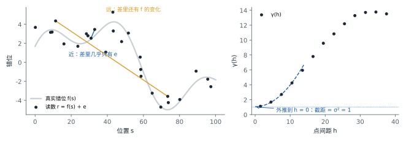
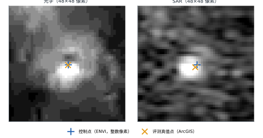
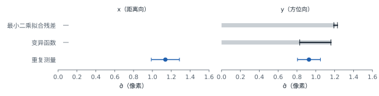

标注质量
评测真值点由人工标注，每一对点都带有标注误差。在评测真值点上量出的配准误差，同时包含算法误差和标注误差；知道标注误差有多大，才能客观地判断算法的结果。
误差模型
一对评测真值点，光学坐标为 p，SAR 坐标为 q，两者之差
d = q − p = g(p) + e
- g(p)：该位置上光学与 SAR 之间真实存在的错位；
- e：标注误差，即 SAR 侧与光学侧两次点击误差之差。
标注误差的大小用 σ 表示：e 在一个坐标轴上的标准差，单位为像素。x 轴近似 SAR 的距离向，y 轴近似方位向。
每个点只标注一次，单个点上的 g 与 e 分不开。每种估计方法都要借助关于 g 或 e 的某种假设把两者分开；g 中没被分出去的部分会算进 σ，这时得到的是 σ 的上界。
估计方法

最小二乘拟合残差
在每个 patch 内用仿射变换近似真实错位 g，把拟合后的残差当作标注误差的样本。
σ̂x — σ̂y 1.21 上界

变异函数
若真实错位在空间上连续、标注误差在点与点之间相互独立，则变异函数在 h → 0 时趋于 σ²。
σ̂x — σ̂y 0.83–1.16 上界

重复测量
同一处地物独立标注两次，两次偏差之差 δ 中真实错位相消，只剩两次标注误差之差。
σ̂x 1.14 σ̂y 0.93 随机部分
估计结果

| 估计方法 | σ̂x（像素） | σ̂y（像素） | 不确定度 | 性质 |
|---|---|---|---|---|
| 最小二乘拟合残差 | —¹ | 1.21 | 95% 置信区间 1.19–1.23 | 上界 |
| 变异函数 | —² | 0.83–1.16 | 6 种外推之间的范围 | 上界 |
| 重复测量 | 1.14 | 0.93 | 标准误 0.15、0.12 | 随机部分 |
- x 残差含有仿射描述不了的错位，为 3.47 像素。
- 外推截距定不下来。
y 方向三种估计都在 0.9–1.2 像素之间。x 方向只有重复测量给出结果，与 y 方向在标准误范围内相当。一对评测真值点在每个坐标轴上的标注误差约为 1 像素。